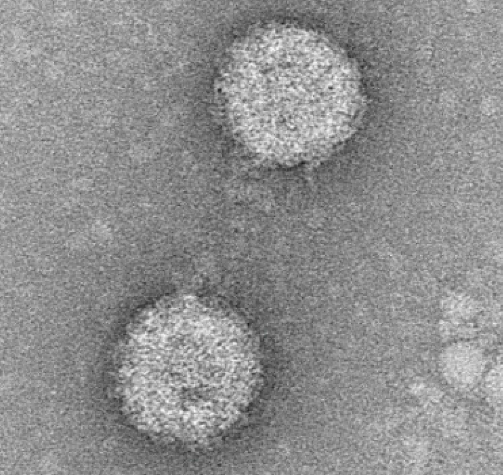

Virus Discovery
We identify and characterise novel arboviruses to expand our understanding of emerging infectious diseases.
Our broad-spectrum cell-based MAVRIC-ELISA detects a wide range of RNA viruses. Combined with cutting-edge metagenomics and next-generation sequencing, this approach allows us to uncover previously unknown viruses in mosquito populations and evaluate their potential as emerging threats to human and animal health.